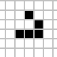
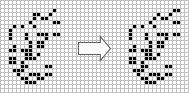

Sir Robin
♞ The first elementary knightship found in Conway's Game of Life.
Conway’s Game of Life is a cellular automaton devised by mathematician John Conway in 1970. The Game of Life consists of a two-dimensional grid of cells, each of which is in one of two possible states: dead or alive. Every cell interacts with its eight neighbors and at each step in time, the following rules apply:
- Any live cell with fewer than two live neighbors dies, as if by under population.
- Any live cell with two or three live neighbors lives on to the next generation.
- Any live cell with more than three live neighbors dies, as if by overpopulation.
- Any dead cell with exactly three live neighbors becomes a live cell, as if by reproduction.
From these four simple rules, many interesting patterns can evolve. For example, the glider moves across the grid at a diagonal, much like the ♝ Bishop on a chess board:
The glider is a simple pattern that belongs to a more general class of patterns known as spaceships. A spaceship is any pattern that reappears after a certain number of generations in the same orientation but in a different position.
A knightship is a spaceship that moves two squares left for every one square it moves up, similar to the ♞ Knight on a chess board. It may surprise you to learn that the first true knightship was only recently discovered, nearly 50 years after the game’s creation!

Sir Robin was found by Adam Goucher on March 6th, 2018 using a searching program that extends partials. A partial is simply an intermediate object that might be used as part of a spaceship. Of course, partials themselves are not spaceships. They lack the key feature of being periodic. But, some come very close. Such as the Almost Knightship which was found back in 2004.
Generation 0 (left) and generation 6 (right) show that the pattern is different by
only two cells at the top right. So close!
Creating Sir Robin using 👑 regl
Regl is a functional abstraction for wegbl with a data-driven style inspired by React.
Starting with the life.js example:

I created several helper functions to parse RLE strings into INITIAL_CONDITIONS for
regl’s framebuffer data. Here’s the run-length encoding of Sir Robin:
const SIR_ROBIN =
`4b2o$4bo2bo$4bo3bo$6b3o$2b2o6b4o$2bob2o4b4o$bo4bo6b3o$2b4o4b2o3bo$o9b2o$bo3bo$
6b3o2b2o2bo$2b2o7bo4bo$13bob2o$10b2o6bo$11b2ob3obo$10b2o3bo2bo$10bobo2b2o$
10bo2bobobo$10b3o6bo$11bobobo3bo$14b2obobo$11bo6b3o2$$11bo9bo$11bo3bo6bo$
12bo5b5o$12b3o$16b2o$13b3o2bo$11bob3obo$10bo3bo2bo$11bo4b2ob3o$13b4obo4b2o$
13bob4o4b2o$19bo$20bo2b2o$20b2o$21b5o$25b2o$19b3o6bo$20bobo3bobo$19bo3bo3bo$
19bo3b2o$18bo6bob3o$19b2o3bo3b2o$20b4o2bo2bo$22b2o3bo$21bo$21b2obo$20bo$19b5o$
19bo4bo$18b3ob3o$18bob5o$18bo$20bo$16bo4b4o$20b4ob2o$17b3o4bo$24bobo$28bo$
24bo2b2o$25b3o$22b2o$21b3o5bo$24b2o2bobo$21bo2b3obobo$22b2obo2bo$24bobo2b2o$
26b2o$22b3o4bo$22b3o4bo$23b2o3b3o$24b2ob2o$25b2o$25bo2$$24b2o$26bo!`and the following functions convert this string into something useable by regl’s framebuffer
let decode = (rle) => rle.replace(/[\n\s]/g,'')
.replace(/(\d+)(\w)/g, (m,n,c) => new Array(parseInt(n)+1).join(c))
let decoder = (rle) => {
let rld = [];
rle.replace('!','').split('$').forEach(s => rld.push(decode(s)))
return rld
}
// reg, green, blue, alpha
let rgbAlpha = (rld) => {// rld: run-length decoded
return rld.map(s => s.split('').map(c => ({'b': 0, 'o': 255}[c])).map(x => [x,x,x,x]))
.map(a => [].concat.apply([], a))
}
let initialize = (rle, p = START_POSITION) => {// p: starting position
let rld = decoder(rle)
let rgba = rgbAlpha(rld)
let initialConditions = (Array(RADIUS * RADIUS * 4)).fill(0)
for(let i = 0; i < rgba.length; i++) {
for(let j = 0; j < rgba[i].length; j++) {
initialConditions[p - i*4*RADIUS + j] = rgba[i][j]
}
}
return initialConditions
}
const INITIAL_CONDITIONS = initialize(SIR_ROBIN)Ride forth from Camelot!
♞ Sir Robin in regl